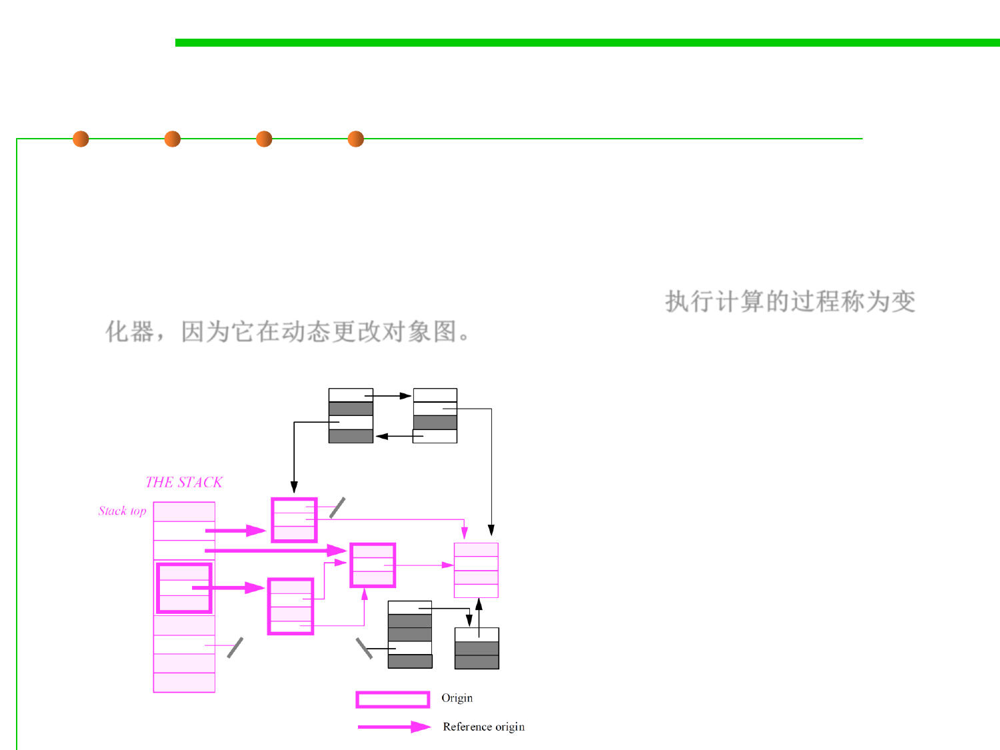

8.1 Metrics, Principles, and Methods of Construction for Performance
Live objects vs. dead objects
▪ The objects and references can be considered a directed graph:
– The live objects of the graph are those reachable from a root.
– The process executing a computation is called the mutator because it is
viewed as dynamically changing the object graph. 执行计算的过程称为变
化器，因为它在动态更改对象图。
Live objects (in color)
and dead objects (in
black) in a combined
stack-based and free
model